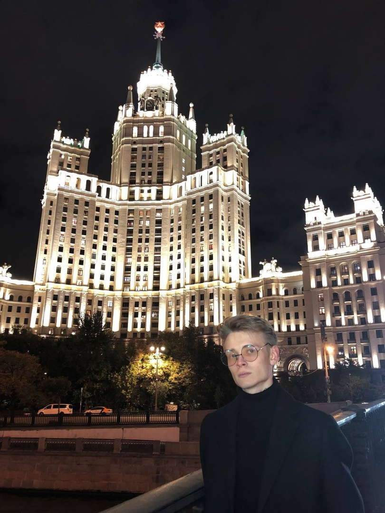

Наши контакты
Телефон: +7(987)654-32-10


Всем привет! На связи ЛМШ Альтернатива, в преддверии мартовской смены мы подготовили для вас новый пост из рубрики #лмш_преподаватели. Сегодня у нас в гостях Якунов Илья, директор смены 2024.
— Всем привет, я Якунов Илья, мне 20 лет, обучаюсь в РНИМУ им. Пирогова (2й мед).
— Меня очень долго зазывал в ЛМШ мой друг, но я все время отказывался, а когда большая часть моих одноклассников оказалась здесь, пришлось поехать с ними.
— В Москве три. Я далеко не сразу определился с направлением. В момент, когда пришло время подачи документов, нужно было взвесить советы знакомых и пользу, которую мне может принести каждый из медицинских ВУЗов, выбор пал на второй мед.
— Во многом это действительно так, однако это не настолько сложно, насколько говорят. Большинство преподавателей относится к тебе не как к ученику, а как к коллеге и стремится обсуждать со студентами сложные темы, а не заставляет тебя учить сухую теорию. Наибольшую сложность привносит объем материала, который нужно запоминать и иметь возможность воспользоваться знаниями при необходимости в любой момент времени.
— Когда я ездил в ЛМШ ребёнком, мне очень понравилась атмосфера, взаимоотношения между взрослыми и детьми и в целом внимание вожатых к нам. Несмотря на невозможность проведения смены 2020 года, про меня не забыли и пригласили стать стажером в смене уже 2021. Я согласился, так как это открывало возможность наладить старые контакты, поучаствовать в организации чего-то глобального, посмотреть на летнюю школу глазами взрослых и просто исполнить старую мечту – преподавать иии... пошло-поехало.
— Ну, помимо организационных вопросов, моим основным направлением является химия, это тот предмет, который помог мне не только поступить в ВУЗ, но и взглянуть на мир чуточку иначе. Я бы даже назвал в какой-то степени её своим хобби, ибо это та наука, в которой для меня нет скучных тем, всегда интересно узнать что-то новое. Собственно да, я веду в ЛМШ занятия по химии, стараясь показать насколько это интересное направление науки, как это в свое сделала моя учительница.
— Можно сказать, что ЛМШ сейчас является для меня второй семьёй и основным занятием в жизни помимо учёбы. Если бы знал раньше, что теряю, – не задумываясь поехал при первой возможности.
Габриэль Гарсиа Маркес– Любовь во время чумы
Ford против Ferrari
Телефон: +7(987)654-32-10